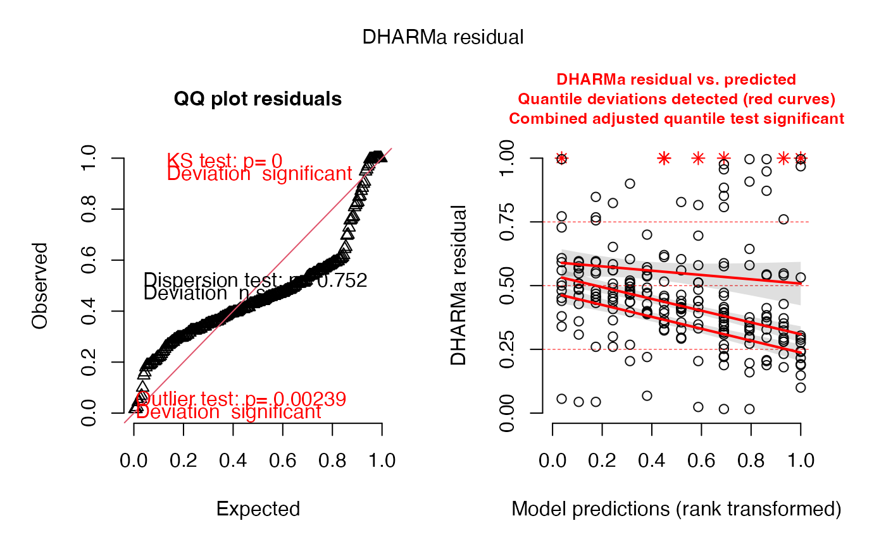
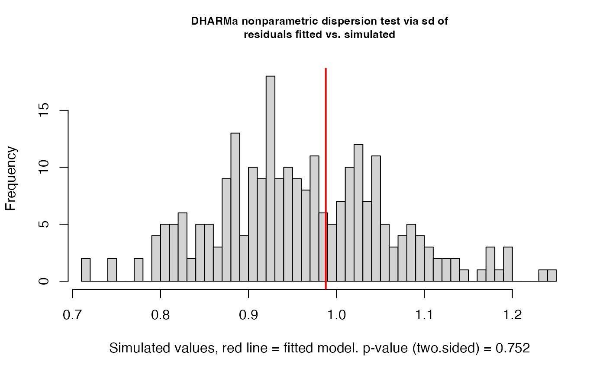

Simulate from a communityPGLMM object
Usage
# S3 method for class 'communityPGLMM'
simulate(
object,
nsim = 1,
seed = NULL,
re.form = NULL,
ntry = 5,
full = FALSE,
...
)Arguments
- object
A fitted model object with class 'communityPGLMM'.
- nsim
positive integer scalar - the number of responses to simulate.
- seed
an optional seed to be used in
set.seedimmediately before the simulation so as to generate a reproducible sample.- re.form
(formula,
NULL, orNA) specify which random effects to condition on when predicting. IfNULL, include all random effects and the conditional modes of those random effects will be included in the deterministic part of the simulation (i.e Xb + Zu); ifNAor~0, condition on none of the random effects: new values of the random effects are drawn for each group with the estimated variances of random terms.- ntry
Number of times to retry simulation in the case of
NAvalues. Only applies to models fit withbayes = TRUE. If there are stillNAs afterntrytimes, the simulated values will be returned (withNAs) with a warning. If you keep gettingNAs try rerunning withfull = TRUE, which simulates in a slower but more stable way.- full
If
TRUE, and the model was fit usingbayes = TRUE, then the simulation will be done with an approximation of the full joint posterior (rather than the marginal posterior, which is the default). This method is much slower but is often more stable, and is technically more accurate.- ...
optional additional arguments (none are used in
.simulateFormula)
Residual diagnostics with DHARMa
The DHARMa package calculates scaled (quantile) residuals from simulations
of a fitted model, to check the distribution, dispersion and other
assumptions of the model. DHARMa::simulateResiduals() works with models
fitted by pglmm() with bayes = FALSE (all families), through
simulate(), model.frame(), family() and predict(); the simulations
are conditional on the estimated random effects (re.form = NULL). DHARMa
warns that the class of the model is not among those it supports (a fixed
list in DHARMa); the residuals are nevertheless correct (we checked the
observed responses, the simulations, and the tests of uniformity and
dispersion with simulated data of each family, including the detection of
overdispersion of counts fitted by a poisson model).
Examples
# community data: abundance of each species at each site
dat <- data.frame(
site = rep(rownames(comm_a), times = ncol(comm_a)),
sp = rep(colnames(comm_a), each = nrow(comm_a)),
freq = unlist(comm_a, use.names = FALSE)
)
dat$shade <- envi$shade[match(dat$site, envi$site)]
phy <- ape::keep.tip(phylotree, unique(dat$sp))
fit <- pglmm(freq ~ shade + (1 | sp__) + (1 | site),
data = dat, cov_ranef = list(sp = phy)
)
# conditional on the estimates of random effects: one column per simulation
sim <- simulate(fit, nsim = 3, seed = 1)
dim(sim)
#> [1] 225 3
head(sim)
#> [,1] [,2] [,3]
#> [1,] 1.752849 6.1433838 4.62280384
#> [2,] 3.765921 2.8356683 2.34179784
#> [3,] 2.237137 0.8458741 2.38667718
#> [4,] 5.740527 3.2140361 0.04653327
#> [5,] 4.290470 4.1706004 1.06767565
#> [6,] 2.902173 2.6033528 4.48664273
# with new values of random effects, drawn with their estimated variances
sim <- simulate(fit, nsim = 3, seed = 1, re.form = NA)
head(sim)
#> [,1] [,2] [,3]
#> [1,] -0.5456290 0.4014994 2.4475270
#> [2,] 0.5443336 1.3287197 -0.2386654
#> [3,] 2.3435816 3.1258862 3.3548289
#> [4,] 3.7809011 -2.2789592 0.7287190
#> [5,] 2.7246490 -1.0582914 1.4335571
#> [6,] 3.7406911 -0.4142783 5.1637165
# residual diagnostics with DHARMa (which warns that the class of the model
# is not among those it lists)
# \donttest{
if (requireNamespace("DHARMa", quietly = TRUE)) {
res <- suppressWarnings(DHARMa::simulateResiduals(fit, n = 250))
plot(res)
DHARMa::testDispersion(res)
}


#>
#> DHARMa nonparametric dispersion test via sd of residuals fitted vs.
#> simulated
#>
#> data: simulationOutput
#> dispersion = 1.0285, p-value = 0.752
#> alternative hypothesis: two.sided
#>
# }